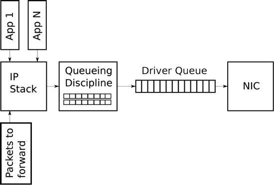
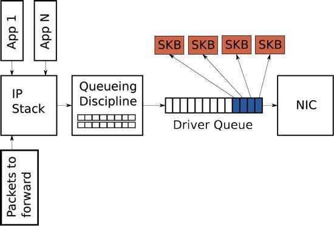
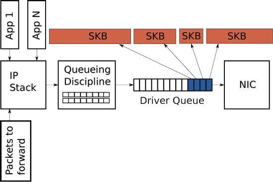
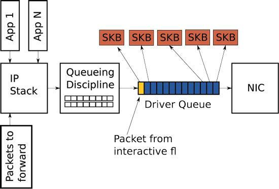

<!DOCTYPE html>
<html xmlns="http://www.w3.org/1999/xhtml" lang="" xml:lang="">
    <head>
        <meta charset="utf-8" />
        <meta name="generator" content="markdown-it" />
        <meta name="viewport" content="width=device-width, initial-scale=1.0, user-scalable=yes" />
        <meta name="author" content="runner" />
        <meta name="dcterms.date" content="2025-04-08 13:44:53.342" />
        <title>net_theory</title>
        <style type="text/css">
            code {
                white-space: pre-wrap;
            }
            span.smallcaps {
                font-variant: small-caps;
            }
            span.underline {
                text-decoration: underline;
            }
            div.column {
                display: inline-block;
                vertical-align: top;
                width: 50%;
            }
        </style>
        <style type="text/css">
            a.sourceLine {
                display: inline-block;
                line-height: 1.25;
            }
            a.sourceLine {
                pointer-events: none;
                color: inherit;
                text-decoration: inherit;
            }
            a.sourceLine:empty {
                height: 1.2em;
            }
            .sourceCode {
                overflow: visible;
            }
            code.sourceCode {
                white-space: pre;
                position: relative;
            }
            div.sourceCode {
                margin: 1em 0;
            }
            pre.sourceCode {
                margin: 0;
            }
            @media screen {
                div.sourceCode {
                    overflow: auto;
                }
            }
            @media print {
                code.sourceCode {
                    white-space: pre-wrap;
                }
                a.sourceLine {
                    text-indent: -1em;
                    padding-left: 1em;
                }
            }
            pre.numberSource a.sourceLine {
                position: relative;
                left: -4em;
            }
            pre.numberSource a.sourceLine::before {
                content: attr(title);
                position: relative;
                left: -1em;
                text-align: right;
                vertical-align: baseline;
                border: none;
                pointer-events: all;
                display: inline-block;
                -webkit-touch-callout: none;
                -webkit-user-select: none;
                -khtml-user-select: none;
                -moz-user-select: none;
                -ms-user-select: none;
                user-select: none;
                padding: 0 4px;
                width: 4em;
                background-color: #ffffff;
                color: #a0a0a0;
            }
            pre.numberSource {
                margin-left: 3em;
                border-left: 1px solid #a0a0a0;
                padding-left: 4px;
            }
            div.sourceCode {
                color: #1f1c1b;
                background-color: #ffffff;
            }
            @media screen {
                a.sourceLine::before {
                    text-decoration: underline;
                }
            }
            code span {
                color: #1f1c1b;
            } /* Normal */
            code span.al {
                color: #bf0303;
                background-color: #f7e6e6;
                font-weight: bold;
            } /* Alert */
            code span.an {
                color: #ca60ca;
            } /* Annotation */
            code span.at {
                color: #0057ae;
            } /* Attribute */
            code span.bn {
                color: #b08000;
            } /* BaseN */
            code span.bu {
                color: #644a9b;
                font-weight: bold;
            } /* BuiltIn */
            code span.cf {
                color: #1f1c1b;
                font-weight: bold;
            } /* ControlFlow */
            code span.ch {
                color: #924c9d;
            } /* Char */
            code span.cn {
                color: #aa5500;
            } /* Constant */
            code span.co {
                color: #898887;
            } /* Comment */
            code span.cv {
                color: #0095ff;
            } /* CommentVar */
            code span.do {
                color: #607880;
            } /* Documentation */
            code span.dt {
                color: #0057ae;
            } /* DataType */
            code span.dv {
                color: #b08000;
            } /* DecVal */
            code span.er {
                color: #bf0303;
                text-decoration: underline;
            } /* Error */
            code span.ex {
                color: #0095ff;
                font-weight: bold;
            } /* Extension */
            code span.fl {
                color: #b08000;
            } /* Float */
            code span.fu {
                color: #644a9b;
            } /* Function */
            code span.im {
                color: #ff5500;
            } /* Import */
            code span.in {
                color: #b08000;
            } /* Information */
            code span.kw {
                color: #1f1c1b;
                font-weight: bold;
            } /* Keyword */
            code span.op {
                color: #1f1c1b;
            } /* Operator */
            code span.ot {
                color: #006e28;
            } /* Other */
            code span.pp {
                color: #006e28;
            } /* Preprocessor */
            code span.re {
                color: #0057ae;
                background-color: #e0e9f8;
            } /* RegionMarker */
            code span.sc {
                color: #3daee9;
            } /* SpecialChar */
            code span.ss {
                color: #ff5500;
            } /* SpecialString */
            code span.st {
                color: #bf0303;
            } /* String */
            code span.va {
                color: #0057ae;
            } /* Variable */
            code span.vs {
                color: #bf0303;
            } /* VerbatimString */
            code span.wa {
                color: #bf0303;
            } /* Warning */
        </style>
        <!--
  Firefox non carica font da locale quindi il font può non essere visibile
  quando di carica la pagina da locale.
  Bisogna impostare about:config
    security.fileuri.strict_origin_policy = false
  -->
        <link rel="stylesheet" href="../../inc/css/katex.min.css" />
        <link rel="stylesheet" href="../../inc/css/fonts/google_fonts.css" />
        <!-- <link href="https://cdn.jsdelivr.net/npm/bootstrap@5.3.0-alpha1/dist/css/bootstrap.min.css" rel="stylesheet" integrity="sha384-GLhlTQ8iRABdZLl6O3oVMWSktQOp6b7In1Zl3/Jr59b6EGGoI1aFkw7cmDA6j6gD" crossorigin="anonymous"> -->
        <link rel="stylesheet" href="../../inc/css/bootstrap.min.css" />
        <link rel="stylesheet" href="../../inc/css/cdp.css" />
        <!--[if lt IE 9]>
            <script src="//cdnjs.cloudflare.com/ajax/libs/html5shiv/3.7.3/html5shiv-printshiv.min.js"></script>
        <![endif]-->
        <meta name="keywords" content="Appunti,Note" />
        <meta name="description" content="Appunti di runner" />
        <link rel="icon" type="image/x-icon" href="../../inc/img/favicon.ico" />
        <link rel="shortcut icon" type="image/x-icon" href="../../inc/img/favicon.ico" />

        <link rel="stylesheet" href="../../inc/js/hljs/styles/default.css" />
        <script src="../../inc/js/hljs/lib/highlight.js"></script>
        <script src="../../inc/js/bootstrap/bootstrap.bundle.min.js"></script>
        <!-- <script src="https://cdn.jsdelivr.net/npm/bootstrap@5.3.0-alpha1/dist/js/bootstrap.bundle.min.js" integrity="sha384-w76AqPfDkMBDXo30jS1Sgez6pr3x5MlQ1ZAGC+nuZB+EYdgRZgiwxhTBTkF7CXvN" crossorigin="anonymous"></script> -->
        <script>
            hljs.initHighlightingOnLoad();
        </script>
        <script type="module">
            import mermaid from '../../inc/js/mermaid/dist/mermaid.esm.min.mjs';
            // import mermaid from 'https://cdn.jsdelivr.net/npm/mermaid@10/dist/mermaid.esm.min.mjs';
            mermaid.initialize({ startOnLoad: true });
        </script>
    </head>
    <body></body>
</html>
<h1 id="net_theory" tabindex="-1">net_theory <a class="header-anchor" href="#net_theory" aria-hidden="true">🔗</a></h1>
<p class="code">2025-04-08 13:44:53.342</p>
<nav class="table-of-contents"><ol><li><a href="#convert-bps-into-kb%2Fs">Convert bps into KB/s </a><ol><li><a href="#back-to-the-basics">Back to the basics </a></li><li><a href="#telecommunications-bit-rates">Telecommunications bit rates </a></li><li><a href="#data-storage">Data Storage </a></li><li><a href="#how-to-calculate-download-speed">How to calculate download speed </a></li><li><a href="#internet-speed-%3D-download-speed">Internet speed = Download speed </a></li><li><a href="#the-principle-of-oversubscription">The principle of Oversubscription </a></li><li><a href="#committed-information-rate">Committed Information Rate </a></li><li><a href="#20mbps-to-kbps">20Mbps to kbps </a></li></ol></li><li><a href="#queueing-in-the-linux-network-stack">Queueing in the Linux Network Stack </a><ol><li><a href="#driver-queue-(aka-ring-buffer)">Driver Queue (aka Ring Buffer) </a></li><li><a href="#huge-packets-from-the-stack">Huge Packets from the Stack </a></li><li><a href="#starvation-and-latency">Starvation and Latency </a></li><li><a href="#byte-queue-limits-(bql)">Byte Queue Limits (BQL) </a></li><li><a href="#queueing-disciplines-(qdisc)">Queueing Disciplines (QDisc) </a></li><li><a href="#buffering-between-the-transport-layer-and-the-queueing-disciplines">Buffering between the Transport Layer and the Queueing Disciplines </a></li><li><a href="#how-to-manipulate-the-queue-sizes-in-linux">How to Manipulate the Queue Sizes in Linux </a></li><li><a href="#oversized-queues-outside-your-control">Oversized Queues Outside Your Control </a></li><li><a href="#summary">Summary </a></li><li><a href="#resources">Resources </a></li></ol></li></ol></nav><h1 id="networking" tabindex="-1">Networking <a class="header-anchor" href="#networking" aria-hidden="true">🔗</a></h1>
<ul>
<li><a href="https://en.wikipedia.org/wiki/Classless_Inter-Domain_Routing">https://en.wikipedia.org/wiki/Classless_Inter-Domain_Routing</a></li>
<li><a href="https://it.wikipedia.org/wiki/Indirizzo_IP_privato">https://it.wikipedia.org/wiki/Indirizzo_IP_privato</a></li>
<li><a href="https://systemd.io/PREDICTABLE_INTERFACE_NAMES/">https://systemd.io/PREDICTABLE_INTERFACE_NAMES/</a></li>
<li><a href="net_systemd-networkd.html#nomi-delle-interfacce-di-rete-con-syst.html">Nomi delle interfacce di rete con systemd</a></li>
</ul>
<h2 id="convert-bps-into-kb%2Fs" tabindex="-1">Convert bps into KB/s <a class="header-anchor" href="#convert-bps-into-kb%2Fs" aria-hidden="true">🔗</a></h2>
<p>Have you ever wondered what speed your Internet Service Provider should be delivering to be compliant with the contract? Do you get confused regarding the nominal speed of your connection and how it translates into an effective downloading speed? If so this guide should suit you, I will try to clarify the most frequent doubts Internet users face regarding the speed of their connection.</p>
<h3 id="back-to-the-basics" tabindex="-1">Back to the basics <a class="header-anchor" href="#back-to-the-basics" aria-hidden="true">🔗</a></h3>
<p>Remember that a bit (binary digit) is the single piece of information in digital systems, it is either a <code>0</code> or a <code>1</code>.<br>
A <code>byte</code>, instead, is a group of <code>8 bits</code>. When we talk about computer memories or data storage\</p>
<ul>
<li>1 <code>kilobit</code> refers to <code>1024 (2^10) bits</code></li>
<li>1 <code>megabit</code> refers to <code>1024 kilobits (or 1024 x 1024 bits)</code></li>
<li>1 <code>kilobyte</code> refers to <code>1024 bytes</code> and so on.</li>
</ul>
<p>In telecommunications, however, transmission rates have traditionally been declared in <code>bits per second (bps)</code>
and <strong>1 kilobit refers to 1000 bits and not 1024 as in data storage</strong>, after all we are talking about discrete signal pulses that describe the bandwidth.</p>
<h3 id="telecommunications-bit-rates" tabindex="-1">Telecommunications bit rates <a class="header-anchor" href="#telecommunications-bit-rates" aria-hidden="true">🔗</a></h3>
<pre><code>Bps = 1 bit/s
Kbps = 1.000 bits/s
Mbps = 1.000 Kbits/s or 1.000.000 bits/s
Gbps = 1.000 Mbit/s or 1.000.000.000 bits/s
Tbps = 1.000 Gbit/s or 1.000.000.000.000 bits/s
</code></pre>
<h3 id="data-storage" tabindex="-1">Data Storage <a class="header-anchor" href="#data-storage" aria-hidden="true">🔗</a></h3>
<pre><code>Byte = 8 bits
Kilobyte = 1024 bytes or 8192 (8 x 1024) bits
Megabyte = 1024 Kilobytes or 1.048.576 (1024 x 1024) bytes or 8.388.608 bits
Gigabyte = 1024 Megabytes or 1.073.741.824 bytes or 8.589.934.592 bits
Terabyte = 1024 Gigabytes or 1.099.511.627.776 bytes or 8.796.093.022.208 bits
</code></pre>
<p>Sometimes hard disk or memory manufacturers take advantage of the confusion between bits and bytes. For example they usually label products with GB, say a 100 GB hard disk, but what they are really shipping is 100 billions of bytes and not 100 Gigabytes. 100 billions of bytes are equal to around 93 Gigabytes (100 / 1,024 ^ 3), meaning the clueless customer is losing almost 10% of what he thought he was buying.</p>
<h3 id="how-to-calculate-download-speed" tabindex="-1">How to calculate download speed <a class="header-anchor" href="#how-to-calculate-download-speed" aria-hidden="true">🔗</a></h3>
<p>OK you purchased that DSL service but are not sure how the speed declared by the Internet service provider translates into effective downloading speed? Here is what you need to do to find it out.</p>
<p>First of all notice how most software, including web browsers, measure the download rate in Kilobytes per second (as the picture of the Firefox download window shows). The Internet service providers, on the other hand, declare speed in bits per second. Suppose you have a DSL running at 512 kbps in downstream.
The first thing to do is to divide that number by 8 so we transform kilobits (1000 bits) per second into 1000 bytes per second.
After that we need to divide the obtained number by 1,024 because we are now talking about data storage,
therefore 1 kilobyte must be equal to 1024 bytes and not 1000 bytes as we have assumed for the transmission rate.</p>
<pre><code>So 512 kbps / 8 = 512 * 1000 / 8 = 64.000 bytes
then 64.000 bytes / 1,024 = 62,5 Kilobytes/s or kB/s
</code></pre>
<h3 id="internet-speed-%3D-download-speed" tabindex="-1">Internet speed = Download speed <a class="header-anchor" href="#internet-speed-%3D-download-speed" aria-hidden="true">🔗</a></h3>
<pre><code>256 kbps = 31,3 KB/s
512 kbps = 62,5 KB/s
1 mbps = 122,1 KB/s
5 mbps = 610,3 KB/s
10 mbps = 1220,7 KB/s
</code></pre>
<p>Consider you want to download a file large 640 Megabytes. We know this is equal to 655360 kilobytes (640 x 1024), therefore if your Internet speed is 1 Mbps you will download at 122,1 KB/s, meaning it will take 89,5 minutes to download the file completely.</p>
<h3 id="the-principle-of-oversubscription" tabindex="-1">The principle of Oversubscription <a class="header-anchor" href="#the-principle-of-oversubscription" aria-hidden="true">🔗</a></h3>
<p>It is important to understand how Internet Service Providers operate. They basically purchase connectivity (guaranteed bandwidth) from Tier 1 operators and resell it to the larger public. Statistically, however, not every customer will be using Internet at the same time, and even the ones who do will not require full bandwidth (this pattern is changing with the diffusion of video streaming services, but for the sake of simplicity we will not consider the effect).</p>
<p>This concept allow ISPs to oversubscribe their DSL lines, a process that was already used by telecom operators with old telephony lines. The ratio of oversubscription may vary from 1:1 to 50:1 or more depending on the quality of the service the ISP is planning to offer. This means that if the ISP purchased a 10 Megabit line they could offer 1 Megabit DSL subscriptions to 50 homes (5:1 ratio) with a high quality of service or they could offer the same 1 Megabut DSL to 300 homes (30:1 ratio) with a less reliable service.</p>
<h3 id="committed-information-rate" tabindex="-1">Committed Information Rate <a class="header-anchor" href="#committed-information-rate" aria-hidden="true">🔗</a></h3>
<p>Now the one thing you need to check on your DSL or cable contract, preferably prior to signing it, is what is called Committed Information Rate or CIR. This is basically the minimum bandwidth your service provider guarantees, at any time and under any circumstance. Consider you decided to subscribe to the 1 Megabit DSL plan offered by the ISP we mentioned above, who bought a 10 Megabit line from a tier 1 carrier. Should they use a 5:1 ratio the plan will be offered to 50 households, meaning that they can offer a CIR of around 200 kbps.</p>
<p>Calculating the CIR is pretty complex, but we can get a good estimation dividing the bandwidth of the dedicated line the ISP is using by the number of subscribers. Therefore 10 Mbps, which is equal to 10.000 kbps, divided by 50 customers will result in a minimum bandwidth of 200 kbps per customer, which is pretty good for current standards.</p>
<h3 id="20mbps-to-kbps" tabindex="-1">20Mbps to kbps <a class="header-anchor" href="#20mbps-to-kbps" aria-hidden="true">🔗</a></h3>
<p>Note: M<span class="mrb">b</span>ps is NOT the same as M<span class="mrb">B</span>ps... M<span class="mrb">b</span>its / M<span class="mrb">B</span>ytes ... <code>8 bits = 1 Byte</code></p>
<p>M<span class="mrb">b</span>= M<span class="mrb">b</span>its</p>
<p>M<span class="mrb">B</span>= M<span class="mrb">B</span>ytes</p>
<p>20M<span class="mrb">b</span>ps = 2.5M<span class="mrb">B</span>ps (don't get confused)</p>
<p>1M<span class="mrb">b</span>= 1024 K<span class="mrb">b</span></p>
<p>20M<span class="mrb">b</span> = 20480 K<span class="mrb">b</span></p>
<p>20480K<span class="mrb">b</span>= 5120K<span class="mrb">B</span></p>
<p>20480K<span class="mrb">b</span>ps = 5120K<span class="mrb">B</span>ps</p>
<p>So... 20M<span class="mrb">b</span>ps = 5120K<span class="mrb">B</span>ps</p>
<p>or... 20M<span class="mrb">b</span>ps = 2.5M<span class="mrb">B</span>ps</p>
<p>Queueing in the Linux Network Stack</p>
<h2 id="queueing-in-the-linux-network-stack" tabindex="-1">Queueing in the Linux Network Stack <a class="header-anchor" href="#queueing-in-the-linux-network-stack" aria-hidden="true">🔗</a></h2>
<p>Packet queues are a core component of any network stack or device. They allow for asynchronous modules to communicate, increase performance and have the side effect of impacting latency. This article aims to explain where IP packets are queued on the transmit path of the Linux network stack, how interesting new latency-reducing features, such as BQL, operate and how to control buffering for reduced latency.</p>
<p></p>
<p class="m">Figure 1. Simplified High-Level Overview of the Queues on the Transmit Path of the Linux Network Stack</p>
<h3 id="driver-queue-(aka-ring-buffer)" tabindex="-1">Driver Queue (aka Ring Buffer) <a class="header-anchor" href="#driver-queue-(aka-ring-buffer)" aria-hidden="true">🔗</a></h3>
<p>Between the IP stack and the network interface controller (NIC) lies the driver queue. This queue typically is implemented as a first-in, first-out (FIFO) ring buffer (<a href="http://en.wikipedia.org/wiki/Circular_buffer)%E2%80%94just">http://en.wikipedia.org/wiki/Circular_buffer)—just</a> think of it as a fixed-sized buffer. The driver queue does not contain the packet data. Instead, it consists of descriptors that point to other data structures called socket kernel buffers (SKBs, <a href="http://vger.kernel.org/%7Edavem/skb.html">http://vger.kernel.org/~davem/skb.html</a>), which hold the packet data and are used throughout the kernel.</p>
<p></p>
<p class="m">Figure 2. Partially Full Driver Queue with Descriptors Pointing to SKBs</p>
<p>The input source for the driver queue is the IP stack that queues IP packets. The packets may be generated locally or received on one NIC to be routed out another when the device is functioning as an IP router. Packets added to the driver queue by the IP stack are dequeued by the hardware driver and sent across a data bus to the NIC hardware for transmission.</p>
<p>The reason the driver queue exists is to ensure that whenever the system has data to transmit it is available to the NIC for immediate transmission. That is, the driver queue gives the IP stack a location to queue data asynchronously from the operation of the hardware. An alternative design would be for the NIC to ask the IP stack for data whenever the physical medium is ready to transmit. Because responding to this request cannot be instantaneous, this design wastes valuable transmission opportunities resulting in lower throughput. The opposite of this design approach would be for the IP stack to wait after a packet is created until the hardware is ready to transmit. This also is not ideal, because the IP stack cannot move on to other work.</p>
<h3 id="huge-packets-from-the-stack" tabindex="-1">Huge Packets from the Stack <a class="header-anchor" href="#huge-packets-from-the-stack" aria-hidden="true">🔗</a></h3>
<p>Most NICs have a fixed maximum transmission unit (MTU), which is the biggest frame that can be transmitted by the physical media. For Ethernet, the default MTU is 1,500 bytes, but some Ethernet networks support Jumbo Frames (<a href="http://en.wikipedia.org/wiki/Jumbo_frame">http://en.wikipedia.org/wiki/Jumbo_frame</a>) of up to 9,000 bytes. Inside the IP network stack, the MTU can manifest as a limit on the size of the packets that are sent to the device for transmission. For example, if an application writes 2,000 bytes to a TCP socket, the IP stack needs to create two IP packets to keep the packet size less than or equal to a 1,500 MTU. For large data transfers, the comparably small MTU causes a large number of small packets to be created and transferred through the driver queue.</p>
<p>In order to avoid the overhead associated with a large number of packets on the transmit path, the Linux kernel implements several optimizations: TCP segmentation offload (TSO), UDP fragmentation offload (UFO) and generic segmentation offload (GSO). All of these optimizations allow the IP stack to create packets that are larger than the MTU of the outgoing NIC. For IPv4, packets as large as the IPv4 maximum of 65,536 bytes can be created and queued to the driver queue. In the case of TSO and UFO, the NIC hardware takes responsibility for breaking the single large packet into packets small enough to be transmitted on the physical interface. For NICs without hardware support, GSO performs the same operation in software immediately before queueing to the driver queue.</p>
<p>Recall from earlier that the driver queue contains a fixed number of descriptors that each point to packets of varying sizes. Since TSO, UFO and GSO allow for much larger packets, these optimizations have the side effect of greatly increasing the number of bytes that can be queued in the driver queue. Figure 3 illustrates this concept in contrast with Figure 2.</p>
<p></p>
<p>Figure 3. Large packets can be sent to the NIC when TSO, UFO or GSO are enabled. This can greatly increase the number of bytes in the driver queue.</p>
<p>Although the focus of this article is the transmit path, it is worth noting that Linux has receive-side optimizations that operate similarly to TSO, UFO and GSO and share the goal of reducing per-packet overhead. Specifically, generic receive offload (GRO, <a href="http://vger.kernel.org/%7Edavem/cgi-bin/blog.cgi/2010/08/30">http://vger.kernel.org/~davem/cgi-bin/blog.cgi/2010/08/30</a>) allows the NIC driver to combine received packets into a single large packet that is then passed to the IP stack. When the device forwards these large packets, GRO allows the original packets to be reconstructed, which is necessary to maintain the end-to-end nature of the IP packet flow. However, there is one side effect: when the large packet is broken up, it results in several packets for the flow being queued at once. This &quot;micro-burst&quot; of packets can negatively impact inter-flow latency.</p>
<h3 id="starvation-and-latency" tabindex="-1">Starvation and Latency <a class="header-anchor" href="#starvation-and-latency" aria-hidden="true">🔗</a></h3>
<p>Despite its necessity and benefits, the queue between the IP stack and the hardware introduces two problems: starvation and latency.</p>
<p>If the NIC driver wakes to pull packets off of the queue for transmission and the queue is empty, the hardware will miss a transmission opportunity, thereby reducing the throughput of the system. This is referred to as starvation. Note that an empty queue when the system does not have anything to transmit is not starvation—this is normal. The complication associated with avoiding starvation is that the IP stack that is filling the queue and the hardware driver draining the queue run asynchronously. Worse, the duration between fill or drain events varies with the load on the system and external conditions, such as the network interface's physical medium. For example, on a busy system, the IP stack will get fewer opportunities to add packets to the queue, which increases the chances that the hardware will drain the queue before more packets are queued. For this reason, it is advantageous to have a very large queue to reduce the probability of starvation and ensure high throughput.</p>
<p>Although a large queue is necessary for a busy system to maintain high throughput, it has the downside of allowing for the introduction of a large amount of latency.</p>
<p>Figure 4 shows a driver queue that is almost full with TCP segments for a single high-bandwidth, bulk traffic flow (blue). Queued last is a packet from a VoIP or gaming flow (yellow). Interactive applications like VoIP or gaming typically emit small packets at fixed intervals that are latency-sensitive, while a high-bandwidth data transfer generates a higher packet rate and larger packets. This higher packet rate can fill the queue between interactive packets, causing the transmission of the interactive packet to be delayed.</p>
<p></p>
<p>Figure 4. Interactive Packet (Yellow) behind Bulk Flow Packets (Blue)</p>
<p>To illustrate this behaviour further, consider a scenario based on the following assumptions:</p>
<ul>
<li>A network interface that is capable of transmitting at 5 Mbit/sec or 5,000,000 bits/sec.</li>
<li>Each packet from the bulk flow is 1,500 bytes or 12,000 bits.</li>
<li>Each packet from the interactive flow is 500 bytes.</li>
<li>The depth of the queue is 128 descriptors.</li>
<li>There are 127 bulk data packets and one interactive packet queued last.</li>
</ul>
<p>Given the above assumptions, the time required to drain the 127 bulk packets and create a transmission opportunity for the interactive packet is (127 * 12,000) / 5,000,000 = 0.304 seconds (304 milliseconds for those who think of latency in terms of ping results). This amount of latency is well beyond what is acceptable for interactive applications, and this does not even represent the complete round-trip time—it is only the time required to transmit the packets queued before the interactive one. As described earlier, the size of the packets in the driver queue can be larger than 1,500 bytes, if TSO, UFO or GSO are enabled. This makes the latency problem correspondingly worse.</p>
<p>Large latencies introduced by over-sized, unmanaged queues is known as Bufferbloat (<a href="http://en.wikipedia.org/wiki/Bufferbloat">http://en.wikipedia.org/wiki/Bufferbloat</a>). For a more detailed explanation of this phenomenon, see the Resources for this article.</p>
<p>As the above discussion illustrates, choosing the correct size for the driver queue is a Goldilocks problem—it can't be too small, or throughput suffers; it can't be too big, or latency suffers.</p>
<h3 id="byte-queue-limits-(bql)" tabindex="-1">Byte Queue Limits (BQL) <a class="header-anchor" href="#byte-queue-limits-(bql)" aria-hidden="true">🔗</a></h3>
<p>Byte Queue Limits (BQL) is a new feature in recent Linux kernels (&gt; 3.3.0) that attempts to solve the problem of driver queue sizing automatically. This is accomplished by adding a layer that enables and disables queueing to the driver queue based on calculating the minimum queue size required to avoid starvation under the current system conditions. Recall from earlier that the smaller the amount of queued data, the lower the maximum latency experienced by queued packets.</p>
<p>It is key to understand that the actual size of the driver queue is not changed by BQL. Rather, BQL calculates a limit of how much data (in bytes) can be queued at the current time. Any bytes over this limit must be held or dropped by the layers above the driver queue.</p>
<p>A real-world example may help provide a sense of how much BQL affects the amount of data that can be queued. On one of the author's servers, the driver queue size defaults to 256 descriptors. Since the Ethernet MTU is 1,500 bytes, this means up to 256 * 1,500 = 384,000 bytes can be queued to the driver queue (TSO, GSO and so forth are disabled, or this would be much higher). However, the limit value calculated by BQL is 3,012 bytes. As you can see, BQL greatly constrains the amount of data that can be queued.</p>
<p>BQL reduces network latency by limiting the amount of data in the driver queue to the minimum required to avoid starvation. It also has the important side effect of moving the point where most packets are queued from the driver queue, which is a simple FIFO, to the queueing discipline (QDisc) layer, which is capable of implementing much more complicated queueing strategies.</p>
<h3 id="queueing-disciplines-(qdisc)" tabindex="-1">Queueing Disciplines (QDisc) <a class="header-anchor" href="#queueing-disciplines-(qdisc)" aria-hidden="true">🔗</a></h3>
<p>The driver queue is a simple first-in, first-out (FIFO) queue. It treats all packets equally and has no capabilities for distinguishing between packets of different flows. This design keeps the NIC driver software simple and fast. Note that more advanced Ethernet and most wireless NICs support multiple independent transmission queues, but similarly, each of these queues is typically a FIFO. A higher layer is responsible for choosing which transmission queue to use.</p>
<p>Sandwiched between the IP stack and the driver queue is the queueing discipline (QDisc) layer (Figure 1). This layer implements the traffic management capabilities of the Linux kernel, which include traffic classification, prioritization and rate shaping. The QDisc layer is configured through the somewhat opaque tc command. There are three key concepts to understand in the QDisc layer: QDiscs, classes and filters.</p>
<p>The QDisc is the Linux abstraction for traffic queues, which are more complex than the standard FIFO queue. This interface allows the QDisc to carry out complex queue management behaviors without requiring the IP stack or the NIC driver to be modified. By default, every network interface is assigned a pfifo_fast QDisc (<a href="http://lartc.org/howto/lartc.qdisc.classless.html">http://lartc.org/howto/lartc.qdisc.classless.html</a>), which implements a simple three-band prioritization scheme based on the TOS bits. Despite being the default, the pfifo_fast QDisc is far from the best choice, because it defaults to having very deep queues (see txqueuelen below) and is not flow aware.</p>
<p>The second concept, which is closely related to the QDisc, is the class. Individual QDiscs may implement classes in order to handle subsets of the traffic differently—for example, the Hierarchical Token Bucket (HTB, <a href="http://lartc.org/manpages/tc-htb.html">http://lartc.org/manpages/tc-htb.html</a>). QDisc allows the user to configure multiple classes, each with a different bitrate, and direct traffic to each as desired. Not all QDiscs have support for multiple classes. Those that do are referred to as classful QDiscs, and those that do not are referred to as classless QDiscs.</p>
<p>Filters (also called classifiers) are the mechanism used to direct traffic to a particular QDisc or class. There are many different filters of varying complexity. The u32 filter (<a href="http://www.lartc.org/lartc.html#LARTC.ADV-FILTER.U32">http://www.lartc.org/lartc.html#LARTC.ADV-FILTER.U32</a>) is the most generic, and the flow filter is the easiest to use.</p>
<h3 id="buffering-between-the-transport-layer-and-the-queueing-disciplines" tabindex="-1">Buffering between the Transport Layer and the Queueing Disciplines <a class="header-anchor" href="#buffering-between-the-transport-layer-and-the-queueing-disciplines" aria-hidden="true">🔗</a></h3>
<p>In looking at the figures for this article, you may have noticed that there are no packet queues above the QDisc layer. The network stack places packets directly into the QDisc or else pushes back on the upper layers (for example, socket buffer) if the queue is full. The obvious question that follows is what happens when the stack has a lot of data to send? This can occur as the result of a TCP connection with a large congestion window or, even worse, an application sending UDP packets as fast as it can. The answer is that for a QDisc with a single queue, the same problem outlined in Figure 4 for the driver queue occurs. That is, the high-bandwidth or high-packet rate flow can consume all of the space in the queue causing packet loss and adding significant latency to other flows. Because Linux defaults to the pfifo_fast QDisc, which effectively has a single queue (most traffic is marked with TOS=0), this phenomenon is not uncommon.</p>
<p>As of Linux 3.6.0, the Linux kernel has a feature called TCP Small Queues that aims to solve this problem for TCP. TCP Small Queues adds a per-TCP-flow limit on the number of bytes that can be queued in the QDisc and driver queue at any one time. This has the interesting side effect of causing the kernel to push back on the application earlier, which allows the application to prioritize writes to the socket more effectively. At the time of this writing, it is still possible for single flows from other transport protocols to flood the QDisc layer.</p>
<p>Another partial solution to the transport layer flood problem, which is transport-layer-agnostic, is to use a QDisc that has many queues, ideally one per network flow. Both the Stochastic Fairness Queueing (SFQ, <a href="http://crpppc19.epfl.ch/cgi-bin/man/man2html?8+tc-sfq">http://crpppc19.epfl.ch/cgi-bin/man/man2html?8+tc-sfq</a>) and Fair Queueing with Controlled Delay (fq_codel, <a href="http://linuxmanpages.net/manpages/fedora18/man8/tc-fq_codel.8.html">http://linuxmanpages.net/manpages/fedora18/man8/tc-fq_codel.8.html</a>) QDiscs fit this problem nicely, as they effectively have a queue-per-network flow.</p>
<h3 id="how-to-manipulate-the-queue-sizes-in-linux" tabindex="-1">How to Manipulate the Queue Sizes in Linux <a class="header-anchor" href="#how-to-manipulate-the-queue-sizes-in-linux" aria-hidden="true">🔗</a></h3>
<p>Driver Queue:</p>
<p>The <code>ethtool</code> command (<a href="http://linuxmanpages.net/manpages/fedora12/man8/ethtool.8.html">http://linuxmanpages.net/manpages/fedora12/man8/ethtool.8.html</a>) is used to control the driver queue size for Ethernet devices. ethtool also provides low-level interface statistics as well as the ability to enable and disable IP stack and driver features.</p>
<p>The <code>-g</code> flag to ethtool displays the driver queue (ring) parameters:</p>
<pre><code class="language-bash">$ ethtool -g eth0
Ring parameters <span class="hljs-keyword">for</span> eth0:
Pre-<span class="hljs-built_in">set</span> maximums:
RX: 16384
RX Mini: 0
RX Jumbo: 0
TX: 16384
Current hardware settings:
RX: 512
RX Mini: 0
RX Jumbo: 0
TX: 256
</code></pre>
<p>You can see from the above output that the driver for this NIC defaults to 256 descriptors in the transmission queue. Early in the Bufferbloat investigation, it often was recommended to reduce the size of the driver queue in order to reduce latency. With the introduction of BQL (assuming your NIC driver supports it), there no longer is any reason to modify the driver queue size (see below for how to configure BQL).</p>
<p>ethtool also allows you to view and manage optimization features, such as TSO, GSO, UFO and GRO, via the -k and -K flags. The -k flag displays the current offload settings and -K modifies them.</p>
<p>As discussed above, some optimization features greatly increase the number of bytes that can be queued in the driver queue. You should disable these optimizations if you want to optimize for latency over throughput. It's doubtful you will notice any CPU impact or throughput decrease when disabling these features unless the system is handling very high data rates.</p>
<p>Byte Queue Limits (BQL):</p>
<p>The BQL algorithm is self-tuning, so you probably don't need to modify its configuration. BQL state and configuration can be found in a /sys directory based on the location and name of the NIC. For example: /sys/devices/pci0000:00/0000:00:14.0/net/eth0/queues/tx-0/byte_queue_limits.</p>
<p>To place a hard upper limit on the number of bytes that can be queued, write the new value to the limit_max file:</p>
<pre><code>echo &quot;3000&quot; &gt; limit_max
</code></pre>
<p>What Is txqueuelen?</p>
<p>Often in early Bufferbloat discussions, the idea of statically reducing the NIC transmission queue was mentioned. The txqueuelen field in the ifconfig command's output or the qlen field in the ip command's output show the current size of the transmission queue:</p>
<pre><code class="language-bash">$ ifconfig eth0
eth0 Link encap:Ethernet HWaddr 00:18:F3:51:44:10
inet addr:69.41.199.58 Bcast:69.41.199.63 Mask:255.255.255.248
inet6 addr: fe80::218:f3ff:fe51:4410/64 Scope:Link
UP BROADCAST RUNNING MULTICAST MTU:1500 Metric:1
RX packets:435033 errors:0 dropped:0 overruns:0 frame:0
TX packets:429919 errors:0 dropped:0 overruns:0 carrier:0
collisions:0 txqueuelen:1000
RX bytes:65651219 (62.6 MiB) TX bytes:132143593 (126.0 MiB)
Interrupt:23

$ ip <span class="hljs-built_in">link</span>
1: lo: mtu 16436 qdisc noqueue state UNKNOWN
<span class="hljs-built_in">link</span>/loopback 00:00:00:00:00:00 brd 00:00:00:00:00:00
2: eth0: mtu 1500 qdisc pfifo_fast state UP qlen 1000
<span class="hljs-built_in">link</span>/ether 00:18:f3:51:44:10 brd ff:ff:ff:ff:ff:ff
</code></pre>
<p>The length of the transmission queue in Linux defaults to 1,000 packets, which is a large amount of buffering, especially at low bandwidths.</p>
<p>The interesting question is what queue does this value control? One might guess that it controls the driver queue size, but in reality, it serves as a default queue length for some of the QDiscs. Most important, it is the default queue length for the pfifo_fast QDisc, which is the default. The &quot;limit&quot; argument on the tc command line can be used to ignore the txqueuelen default.</p>
<p>The length of the transmission queue is configured with the ip or ifconfig commands:</p>
<pre><code class="language-bash">ip <span class="hljs-built_in">link</span> <span class="hljs-built_in">set</span> txqueuelen 500 dev eth0
</code></pre>
<p>Queueing Disciplines:</p>
<p>As introduced earlier, the Linux kernel has a large number of queueing disciplines (QDiscs), each of which implements its own packet queues and behaviour. Describing the details of how to configure each of the QDiscs is beyond the scope of this article. For full details, see the tc man page (man tc). You can find details for each QDisc in man tc qdisc-name(for example, man tc htbor man tc fq_codel).</p>
<p>TCP Small Queues:</p>
<p>The per-socket TCP queue limit can be viewed and controlled with the following /proc file: /proc/sys/net/ipv4/tcp_limit_output_bytes.
You should not need to modify this value in any normal situation.</p>
<h3 id="oversized-queues-outside-your-control" tabindex="-1">Oversized Queues Outside Your Control <a class="header-anchor" href="#oversized-queues-outside-your-control" aria-hidden="true">🔗</a></h3>
<p>Unfortunately, not all of the over-sized queues that will affect your Internet performance are under your control. Most commonly, the problem will lie in the device that attaches to your service provider (such as DSL or cable modem) or in the service provider's equipment itself. In the latter case, there isn't much you can do, because it is difficult to control the traffic that is sent toward you. However, in the upstream direction, you can shape the traffic to slightly below the link rate. This will stop the queue in the device from having more than a few packets. Many residential home routers have a rate limit setting that can be used to shape below the link rate. Of course, if you use Linux on your home gateway, you can take advantage of the QDisc features to optimize further. There are many examples of tc scripts on-line to help get you started.</p>
<h3 id="summary" tabindex="-1">Summary <a class="header-anchor" href="#summary" aria-hidden="true">🔗</a></h3>
<p>Queueing in packet buffers is a necessary component of any packet network, both within a device and across network elements. Properly managing the size of these buffers is critical to achieving good network latency, especially under load. Although static queue sizing can play a role in decreasing latency, the real solution is intelligent management of the amount of queued data. This is best accomplished through dynamic schemes, such as BQL and active queue management (AQM, <a href="http://en.wikipedia.org/wiki/Active_queue_management">http://en.wikipedia.org/wiki/Active_queue_management</a>) techniques like Codel. This article outlines where packets are queued in the Linux network stack, how features related to queueing are configured and provides some guidance on how to achieve low latency.
Acknowledgements</p>
<h3 id="resources" tabindex="-1">Resources <a class="header-anchor" href="#resources" aria-hidden="true">🔗</a></h3>
<p>Controlling Queue Delay: <a href="http://queue.acm.org/detail.cfm?id=2209336">http://queue.acm.org/detail.cfm?id=2209336</a></p>
<p>Bufferbloat: Dark Buffers in the Internet: <a href="http://cacm.acm.org/magazines/2012/1/144810-bufferbloat/fulltext">http://cacm.acm.org/magazines/2012/1/144810-bufferbloat/fulltext</a></p>
<p>Bufferbloat Project: <a href="http://www.bufferbloat.net">http://www.bufferbloat.net</a></p>
<p>Linux Advanced Routing and Traffic Control How-To (LARTC):<a href="http://www.lartc.org/howto">http://www.lartc.org/howto</a></p>
</body></html>